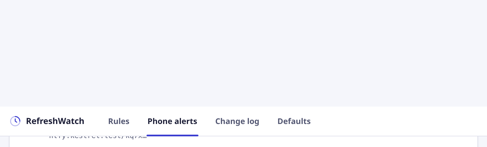
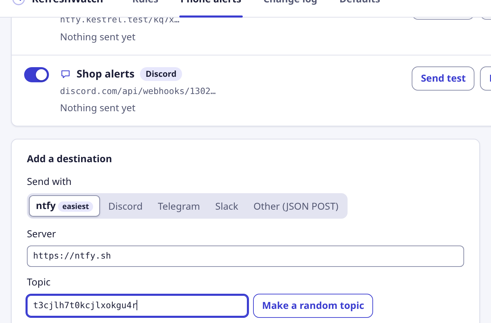
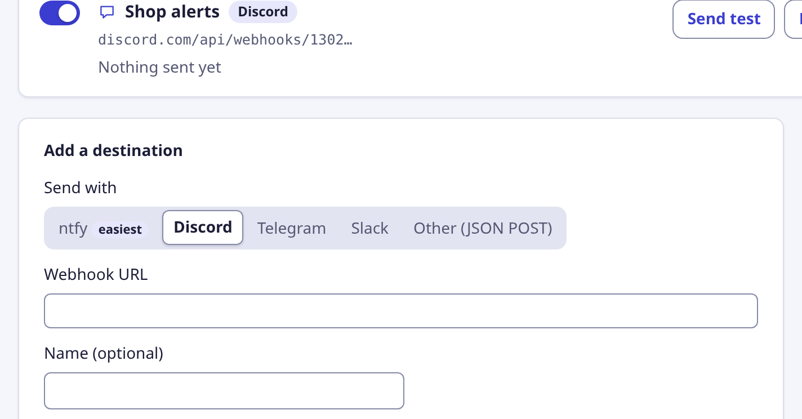
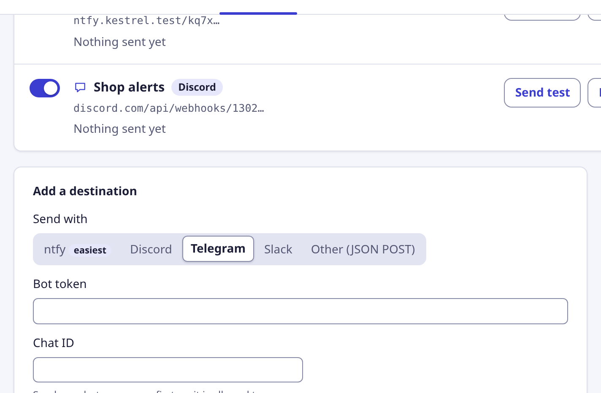
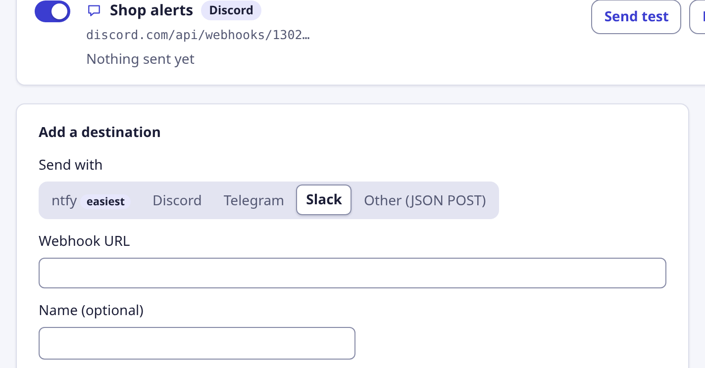

Get a phone notification when a website changes
RefreshWatch checks the page in Chrome. When it changes, it can send the alert to your phone through an app you already use: ntfy, Discord, Telegram, Slack, or any app that accepts a webhook.
How it works
You paste in your own address, and RefreshWatch sends the alert straight there from Chrome. There is no account with us and nothing passes through our servers. We don't have any.
- Pick a service below and add it on the options page, under Phone alerts. You can add up to three.
- In the popup, switch on Send to my phone for the watch you start. It's off until you turn it on.
- Leave Chrome open on your computer. RefreshWatch watches pages in open tabs and doesn't check them in the cloud, so a closed Chrome or a sleeping computer sends nothing.

ntfy easiest
ntfy is a free push notification app. There is no account and no sign-up: a topic name works like a private channel.
- Install the ntfy app on your phone (Android or iPhone) and open it.
- In the app, tap + and subscribe to a topic name. Any name works, but anyone who knows it can read it, so make it hard to guess.
- In RefreshWatch, open the options page and choose the Phone alerts tab. Under Send with, pick ntfy.
- Leave Server as
https://ntfy.sh(or enter your own server). In Topic, type the same topic name, or click Make a random topic and subscribe to that one in the app. - Click Save destination. Chrome asks to let RefreshWatch send to the ntfy server; allow it. Nothing else is granted.
- Click Send test. Your phone should buzz within a few seconds. Tapping the alert opens the page.

Discord
A Discord notification arrives in a channel of your own server, and the Discord phone app pushes it to you.
- In Discord, open Server Settings, then Integrations, then Webhooks, and choose New Webhook. You need permission to manage webhooks on the server.
- Pick the channel the alerts should go to, give the webhook a name, and click Copy Webhook URL.
- In RefreshWatch, open Phone alerts, pick Discord, and paste the address into Webhook URL.
- Click Save destination. Chrome asks to let RefreshWatch send to discord.com; allow it. Nothing else is granted.
- Click Send test and check the channel.

Telegram
A Telegram alert goes to your own chat, through a small helper account that you create for yourself in a minute.
- In Telegram, open a chat with @BotFather, send
/newbot, and follow the questions. It replies with a token that looks like123456789:AA…. - Open a chat with the new account you just made and send it any message, such as “hi”. This lets it message you back.
- Find your chat ID: open
https://api.telegram.org/bot<your token>/getUpdatesin a browser tab and look for"chat":{"id":…}. For a channel you can use its name, such as@mychannel. - In RefreshWatch, open Phone alerts, pick Telegram, and fill in Bot token and Chat ID.
- Click Save destination. Chrome asks to let RefreshWatch send to api.telegram.org; allow it. Nothing else is granted.
- Click Send test and check Telegram.

Slack
A Slack alert goes to a channel you choose, using Slack's incoming webhooks.
- Go to api.slack.com/apps, create an app for your workspace, and turn on Incoming Webhooks.
- Choose Add New Webhook to Workspace, pick a channel, and copy the webhook URL.
- In RefreshWatch, open Phone alerts, pick Slack, and paste the address into Webhook URL.
- Click Save destination. Chrome asks to let RefreshWatch send to hooks.slack.com; allow it. Nothing else is granted.
- Click Send test and check the channel. The Slack phone app shows it as a normal message.

Any other app (JSON POST)
Anything that accepts a web request can receive RefreshWatch alerts: a Home Assistant or n8n flow, your own script, or a service such as webhook.site for testing.
- Get an
https://address from the app that should receive the alert. - In RefreshWatch, open Phone alerts, pick Other (JSON POST), and paste it into Address (URL).
- Click Save destination. Chrome asks to let RefreshWatch send to that address; allow it. Nothing else is granted.
- Click Send test. The app should receive a request with the
testevent below.
Every alert is a POST with Content-Type: application/json, no cookies and no other headers. If the receiver needs a key, put it in the address. The body always has these fields:
{
"source": "RefreshWatch",
"version": "0.2.0",
"event": "price",
"title": "Price dropped below 120",
"pageTitle": "Waxed Field Jacket",
"url": "https://shop.example/jacket",
"text": "$119.00",
"at": "2026-10-24T09:30:00.000Z"
}| Field | Meaning |
|---|---|
source | Always "RefreshWatch". |
version | The extension version. |
event | One of changed, keyword, price, missing (a picked element wasn't found) or test. These words are always English, so your automation can match them. |
title | A short headline in your Chrome language. |
pageTitle, url | The watched page. Both are empty for a test. |
text | The changed text, up to 300 characters. Left out when Include the changed text is off, and for missing and test events, which have none. |
at | When it happened, as an ISO 8601 time in UTC. |
What gets sent
An alert contains the title, the page title and address, and, if you leave Include the changed text on, up to 300 characters of the changed text. Turn that off if the page text is private.
It goes only to the address you entered. That service's own privacy policy applies to what it receives. Remove the destination and nothing is sent.
Addresses, tokens and topics stay in Chrome on this computer. They are never shown in the change log or in notifications. See the privacy policy.
If a test fails
- Check this address. Copy it again from the app, with nothing before or after it.
- Permission. If you pressed Don't allow, nothing was saved. Save again and allow the address.
- Too many alerts. RefreshWatch sends at most one alert per destination every 10 seconds, so a fast refresh can't flood your phone. Alerts in between are combined into one that arrives when the 10 seconds are up, with a count of the others.
- Nothing arrives, no error. Check that Send to my phone is on for that tab, and that the destination's switch is on.
Ready to watch something? See the price drop alert guide or the website change alert guide.